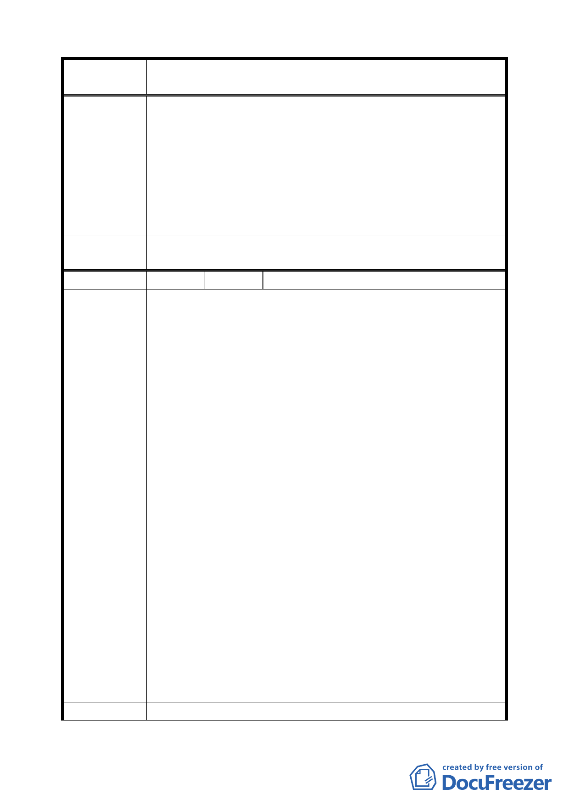

案 名 臺北市文山區都市計畫通盤檢討（細部計畫）案
審查結論
的需要規定，另外入學學生數有下降趨勢，且教育局評
（94.12.21）
估學校未來發展，並無增加校地之需求，因此維持原公
展計畫。
二、另該校已於東北隅保留活動中心預定空間，俟預算編列
後則可興建。
三、公園緊鄰萬福國小，公園也可作學生課餘活動空間，而
學校也可作社區活動之用，因此擴大公園面積對萬福國
小及鄰近社區均是有益。
委員會議
決議
依專案小組審查結論辦理。
編 號 ２5 陳情人 賴賢松里長（94.12.21 第八次專案提出）
一、 關於萬年公園旁計畫巷道變更為公園用地案，係由萬年
里 93 年里鄰工作會報暨里民大會決議，報經市府都發
局、消防局、養工處、公園處、文山區公所及萬年里辦
公處等單位時地會勘研討，獲致共識後，循公開、透明、
正常的行政程序辦理公告，這是多少人智慧的結晶！
二、 萬年里 93 年里民大會另案決議通過：建議廢除萬年公
園內網球場，改建為多功能的休閒運動公園。復經文山
區公所辦理民意調查，獲得公園周邊里民包括萬年里、
萬和里暨萬隆里等里民，高達 81.6％的支持，文山區公
所鑑於大多數里民期望拆除網球場改建其他設施，另鑑
於首揭計畫巷道變更為公園案，公告期間為二年。乃決
陳情理由
定依照民意調查結果拆除網球場。合併兩案作整體規
（細景 7）
劃。
三、 今天萬和里里長及萬福國小家長會長，建議將其變更為
萬福國小的學校用地，主要理由是學校缺乏大型的集會
活動場所，亟需增建活動中心，顯然昧於事實，經不起
民意的考驗。萬年公園的當地里及萬年里，甚至周邊萬
和里與萬隆里的里民，絕對多數均不能苟同，堅決反對。
四、 本案原道路用地於 83 年間闢作兒童遊戲巷，多年來各
界反映頗佳，現變更為公園用地，立意良好，亦符合事
實。
五、 據萬福國小首任校長張啟隆先生表示，創校初期確有興
建學生活動中心之議，預定建築地點即在該校東北隅
（現在的籃球場及高年級的遊戲場）。
建 議 辦 法 文山區都市計畫通盤檢討案細景 7，懇請尊重民意，維持原
四〇